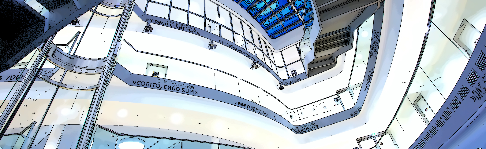
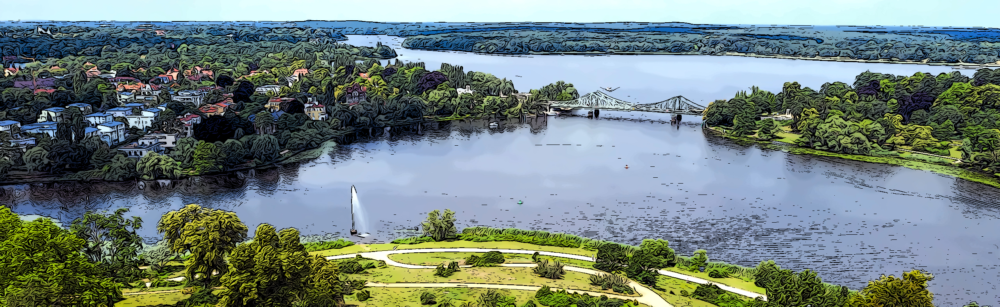

The 14th International Symposium on Visual Information Communication and Interaction (VINCI 2021)
Potsdam, Germany, 6–7 September 2021
The 14th International Symposium on Visual Information Communication and Interaction (VINCI 2021)
Potsdam, Germany, 6–7 September 2021
The 14th International Symposium on Visual Information Communication and Interaction (VINCI 2021)
Potsdam, Germany, 6–7 September 2021
The Hasso Plattner Institute (HPI) is unique in the German university landscape. Academically structured as the independent Digital Engineering Faculty (DEF) at the University of Potsdam, HPI unites excellent research and teaching with the advantages of a privately financed institute and a tuition-free study program.
The conference is organized by the 'Computer Graphics Systems Group' at the HPI (HPI3D). This group is dedicated to research and development in information visualization, visual analytics, and visual computing. Research topics include Geospatial Analysis & Geovisualization, Sensor Analytics, Visual Media, Information Visualization & Cartography, Real-Time Rendering, as well as Non-Photorealistic Rendering.

Potsdam is the capital and largest city of the German state of Brandenburg and directly borders the German capital, Berlin. The city which is over 1000 years old is widely known for its palaces, its lakes, and its overall historical and cultural significance. Landmarks include the parks and palaces of Sanssouci, Germany's largest World Heritage Site, as well as other palaces such as the Orangery Palace, the New Palace, the Cecilienhof Palace, or the Charlottenhof Palace.
Please visit the following sites for more information:
More information will follow in the coming days and weeks.
More information will follow in the coming days and weeks.